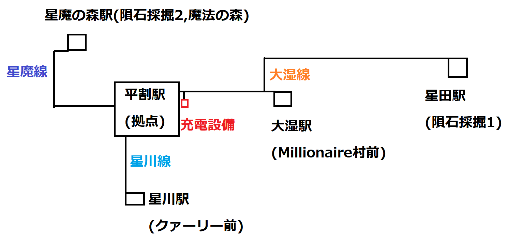

日記 20211213
んあ、無水エタノール洗浄忘れてた。
皆さんにはあんまり関係ないとは思いますが、昨日の記事の文末につけておいたbrタグを閉じ忘れてました。この記事を上げるときに一緒に訂正版に差し替えておきます。
今朝起きたら東上線が止まってたんですが、伊勢崎線民なので同じ会社という実感わかず。少し前まで事業部すら東上越生線専用のものがあったらしいのでそんな感じかなと。
秩父鉄道は本当に存在してないと東武としては困りますね。西板線が実現していたら今頃はもっとという夢物語はさておき。
工業マイクラで最近起動時間を伸ばそうと試みてたんですが、そんな挑戦が吹き飛ぶほどの事がございまして。
RailCraftが亜鉛鉱石を生成してくれません。結構前から知られているバグなのですが、解決方法をやってみましたが治らず。
なので魔法に頼ってみることにしました。そしてThaumCraftを導入してワールドを探索してみると、バージョンの壁発見！しかもその向こうには魔法の森がありました。
別にImmersive Intelligenceの生成に頼るのもいいのかなと思ったんですが、あえて天然に無いものを魔法で作る方がルートとしては楽しいのではと思いまして。
なんで亜鉛が必要なのかと言うと、ブラス合金を作らないとRailCraftの電化ができないからです。なぜ電化したいかですが、大きく分けて2つ理由があります。
１つは入替え用設備として電気機関車の方が便利ということ。蒸気機関車は一度機関を起動するのに燃料を多く消費したり水量の監視が必要だったりと入換機には到底向いてません。
電気機関車は給電さえしていれば機関を起動する必要がありませんので、機動的な運用ができます。そして、次が一番重要な理由と言ってもいいのですが...
バットボックスカートが重い！重すぎる！SL-カート-チェスト-チェストの編成だとちゃんと最高速度が出るのですが、この最後尾にバットボックスカートを連結すると、とんでもなく遅くなります。
4速に入れても1速くらいの速度しか出ません。なので、バットボックスカートは使うときだけ連結して、なおかつ補機SLを連結した重連（SL-SL-カート-チェスト-チェスト-BatBox）で運用していますが、これで4速に入れても2速くらいの速度しか出ません。
しかし、これだと編成が長すぎて安全確認がしにくかったり、折返し用のループ線の停車位置が奥まったり駅によっては足りなくなってしまいます。ですので、使わないときは運行頻度が低い本線上に補機共々突っ込んでます。
今後の日記に登場しそうなので適当に大まかな路線図を書いておきます。多分地理的にあってません。気が向いたらJourneyMapのスクショを応用した路線図に差し替えたりしておきます。

この地図でいうと、バットボックスカートと補機がいつも突っ込まれてるのは星川線です。丸石が余りまくってるせいでクァーリーの稼働頻度が急減しており、留置線と化しています。
ちなみに、平割駅は現在こそは駅舎を整備して屋内にありますが、運行開始当初は拠点横の池の真横に有りました。ところが、クリーパーやゾンビの襲撃に依る事故が多発し、現在の駅舎を整備することにしました。
其の駅舎も一度機関車の爆発事故で小規模ながら物が吹っ飛んだりしていますが、クリーパーやゾンビの襲撃で事故が起きたことはありません。このまま無事故で電化まで行ければいいのですが...
明日の日記はスクリーンショットも交えてみようとおもいます。それではまた。